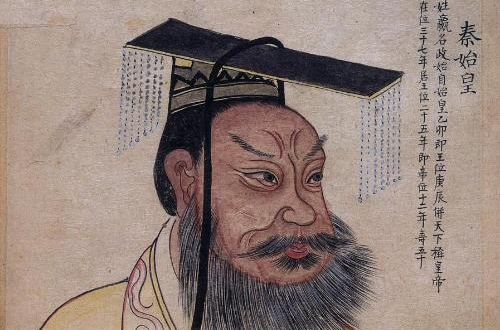
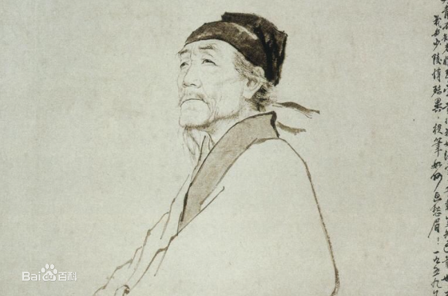

风流人物
-
NO.1

秦始皇秦始皇（前259年农历十二月初三—前210年），嬴姓，赵氏，名政，又名赵正（政）、秦政，或称祖龙 ，秦庄襄王之子。 中国历史上著名的政治家、战略家、改革家，完成华夏大一统的铁腕政治人物，也是中国第一个称皇帝的君主。
-
NO.2

杜甫杜甫（712年—770年），字子美，汉族，本襄阳人，后徙河南巩县。 自号少陵野老，唐代伟大的现实主义诗人，与李白合称“李杜”。为了与另两位诗人李商隐与杜牧即“小李杜”区别，杜甫与李白又合称“大李杜”，杜甫也常被称为“老杜”。